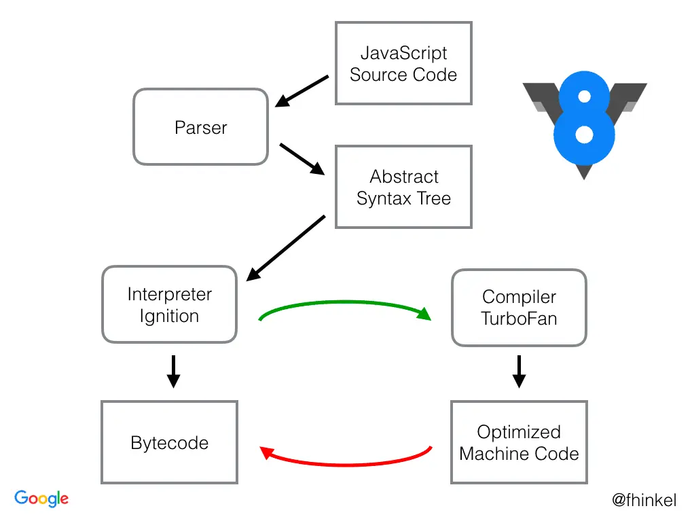

서론
WebAssembly는 V8 엔진에서 실행할 수 있는 Javascript 외의 포맷입니다. 이 포맷은 Javascript 보다 더 저수준 언어에 가깝고 평균적으로 더 나은 성능으로 실행될 수 있습니다. 그렇다면, 어떠한 차이 때문에 이러한 결과가 도출되었는지 알아보고, 사용 방법도 알아보겠습니다.
본론
V8 엔진은 무엇인가?
서론에서 언급했듯이, WebAssembly는 V8 엔진에서 실행되는 저수준 포맷입니다. 그렇다면, WebAssembly를 알기 전에 V8 엔진은 무엇일까요? 간단하게라도 조사하고 넘어가야겠다는 생각이 들어서 찾아보았습니다.
V8 엔진은 Google에서 만든 오픈소스 프로젝트이며 Javascript와 WebAssembly를 실행할 수 있는 엔진입니다. 예를 들어, Javascript는 분석되어 기계어(Machine Code)로 변환되며, 이를 통해 컴퓨터의 CPU가 해당 명령을 수행할 수 있습니다.
더 자세한 내용이 궁금하시다면, 아래의 링크에서 좀 더 찾아보면 도움이 될 것 같습니다. Link
V8엔진에서의 Javascript
이 글의 주제는 WebAssembly이지만, WebAssembly의 동작 방식을 알기 전에 Javascript가 V8엔진에서 어떻게 동작하는지 간단히 알아보고, WebAssembly의 동작을 살펴보도록 하겠습니다.
아래의 이미지는 Link에서 가지고온 V8엔진에서의 Javascript의 동작 순서를 그려낸 것입니다.

자바스크립트 소스 코드는 구체적인 문법 규칙을 따르는 텍스트 형태로 존재합니다. 이러한 텍스트는 문법적 분석을 통해 기계가 이해할 수 있는 형태로 번역될 수 있습니다. 이 번역 과정을 효율적으로 수행하기 위해, 소스 코드는 먼저 구조화된 데이터 형태인 추상 구문 트리(Abstract Syntax Tree, AST)로 변환됩니다.
Google의 V8 엔진은 자바스크립트 코드를 처리하기 위해 파서(Parser)를 사용하여 이러한 AST를 생성합니다. AST는 소스 코드의 구문적 구조를 반영하며, 각 노드는 개별 코드 구성 요소(예: 변수 선언, 함수 호출 등)를 나타냅니다. 생성된 AST는 코드의 의미를 분석하고 실행 계획을 세우는 기반으로 사용됩니다.
V8 엔진에 내장된 Ignition이라는 인터프리터는 이 AST를 해석하여 바이트코드로 변환하는 역할을 수행합니다. 바이트코드는 V8 엔진의 저수준 언어로, 더 빠른 실행을 가능하게 하는 중간 표현 형태입니다. 이 바이트코드는 TurboFan이라고 불리는 고급 최적화 컴파일러에 의해 처리됩니다.
TurboFan은 실행 중에 수집된 성능 데이터를 분석하고, 바이트코드를 최적화된 기계어 코드로 변환합니다. 이 과정은 코드의 실행 속도를 크게 향상시킬 수 있으며, 자바스크립트 애플리케이션의 전반적인 성능을 최적화하는 데 중요한 역할을 합니다.
단, 빨간색 화살표의 내용이 다시 Bytecode로 변환되어지는 것이라고 오해할 수 있지만, 그런 의미가 아니라, 다음 동작을 하기 위해서 다시 Ignition으로 돌아간다고 이해하면 좋을 것 같습니다. 컴파일의 최종 결과물의 형태는 기계가 해석할 수 있는 기계어(Machin Code)가 맞습니다.
v8엔진에서의 WebAssembly
V8 엔진에서 Javascript는 소스 코드를 분석하고, AST(Abstract Syntax Tree) 변환을 거쳐, Ignition 인터프리터를 통해 바이트 코드로 변환됩니다. 반면, WebAssembly는 이진 코드 형태로 브라우저에 전달되며, 간단하고 빠른 파싱 후에 바로 기계어로 컴파일이 가능한 상태가 됩니다. 이 과정을 담당하는 V8 엔진의 컴파일러는 Liftoff라고 불립니다. Liftoff는 WebAssembly를 바로 실행 가능한 기계어로 빠르게 변환할 수 있습니다. 성능 최적화가 필요한 경우, 추가적인 최적화를 위해 TurboFan 컴파일러가 사용됩니다.
Liftoff는 WebAssembly의 빠른 컴파일을 책임지며, 최적화가 필요한 경우 TurboFan으로 코드를 넘겨 더 깊은 최적화를 수행합니다. 이 두 컴파일러의 협력을 통해 V8 엔진은 WebAssembly 코드를 효율적으로 처리하며, 빠른 시작과 고성능 유지를 동시에 달성할 수 있습니다.
WebAssembly를 사용해 보기
Next에서 WebAssembly 사용해보기
-
Next에서 제공하는 example을 방문한다. HERE
-
제공하는 프로젝트 생성 방법을 따라해본다. (하지만, 나는 Bun으로 함.)
bunx create-next-app --example with-webassembly with-webassembly-app
- 생성된 프로젝트에서 pakage.json의 script를 확인하여 컴파일 명령어를 실행한다.
bun build-rust
- 프로젝트를 확인한다.
- root에
add.wasm파일이 생성된 것을 확인할 수 있다. - root에
add.wasm.d.ts파일이 생성된 것을 확인할 수 있다. src/폴더에 .rs 확장자인 Rust 소스 파일이 있는 것을 확인할 수 있다.components/RustServerComponent.tsx를 확인해본다.
위 파일들을 확인하면 간단하게라도 흐름을 파악할 수 있습니다.
components/RustServerComponent.tsx에서 import한 .wasm 파일에서 함수를 추출하여 바로 사용할 수 있는 점이 조금 신기하네요.
간단한 성능 테스트해보기
간단하게라도 성능을 한 번 테스트 해보기 위해서 ts(js)와 rust로 피보나치수열을 계산해주는 함수를 각각 만들어 비교를 해 보았습니다.
위에서 생성하였던 프로젝트에서 조금 수정을 해보았습니다.
src/fibonacci.rs을 추가src/fibonacci.rs파일의 내용을 아래와 같이 수정
#[no_mangle]
pub extern "C" fn fibonacci(n: usize) -> u64 {
if n == 0 {
return 0;
}
let mut a = 0;
let mut b = 1;
for _ in 1..n {
let temp = a + b;
a = b;
b = temp;
}
a
}
package.json파일의 script 수정
- "build-rust": "rustc --target wasm32-unknown-unknown -O --crate-type=cdylib src/fibonacci.rs -o fibonacci.wasm",
- root에
fibonacci.wasm.d.ts파일 추가
export function fibonacci(number: number): number;
- 3번에서 추가하였던 script를 실행
bun build-rust
- root에
fibonacci.wasm파일이 생성되어짐.
components/RustServerComponent.tsx을 수정.
const TS = {
fibonacci(n: number): number {
let a = 0;
let b = 1;
for (let i = 1; i < n; i++) {
let temp = a + b;
a = b;
b = temp;
}
return a;
}
}
export async function RustServerComponent({ number }: { number: number }) {
const Rust = await import("../fibonacci.wasm");
console.log('fibonacci number:', number);
console.group('Typescript Calculate');
console.time('ts');
const tsResult = TS.ibonacci(number).toString();
console.timeEnd('ts');
console.log('tsResult:', tsResult);
console.groupEnd();
console.group('Rust Calculate');
console.time('rs');
const rsResult = Rust.fibonacci(number).toString();
console.timeEnd('rs');
console.log('rsResult:', rsResult);
console.groupEnd();
return <>
<p>
<h2>Typescript vs Rust(Wasm)</h2>
<h3>결과는 Server Console 창을 확인해주세요. 서버 컴포넌트니깐</h3>
</p>
</>;
}
4번 연속으로 실행을 해서 아래와 같은 데이터를 얻을 수 있었습니다.
| 순서 | 언어 | 실행 시간 (ms) |
|---|---|---|
| 1 | Typescript | 3.792 |
| 1 | Rust | 0.060 |
| 2 | Typescript | 0.007 |
| 2 | Rust | 0.023 |
| 3 | Typescript | 0.004 |
| 3 | Rust | 0.006 |
| 4 | Typescript | 0.007 |
| 4 | Rust | 0.029 |
결론
위에서 설명한 것처럼 Javascript와 WebAssembly는 각각 다른 목적과 특성을 가지고 있습니다. WebAssembly는 특정 고성능 로직을 최적화된 형태로 실행하기 위해 개발된 기술로, 크롬 브라우저 뿐만 아니라 V8 엔진을 사용하는 모든 곳에서 바이너리 코드로 실행됩니다. 초기 실험에서 보았듯, WebAssembly는 처음 실행 시 빠른 성능을 보여주지만, 반복 실행에서는 자바스크립트(여기서는 Typescript)가 JIT 최적화를 통해 성능이 향상되며, 경우에 따라 WebAssembly보다 빠르게 실행될 수 있습니다. 이는 WebAssembly가 모든 상황에서 최선의 선택은 아님을 시사합니다. 초기 로딩 속도가 중요하거나, 고성능이 필수적인 작업에서 WebAssembly의 사용을 고려할 수 있으며, 일반적인 웹 애플리케이션 개발에서는 자바스크립트의 유연성과 성능 최적화가 더 적합할 수 있습니다.